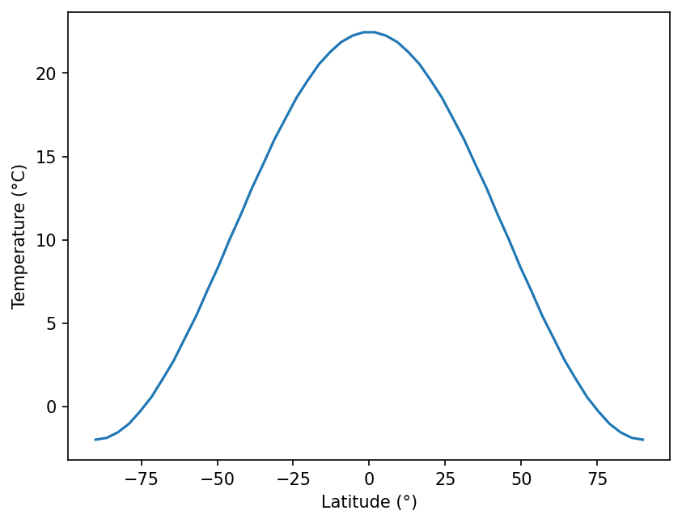
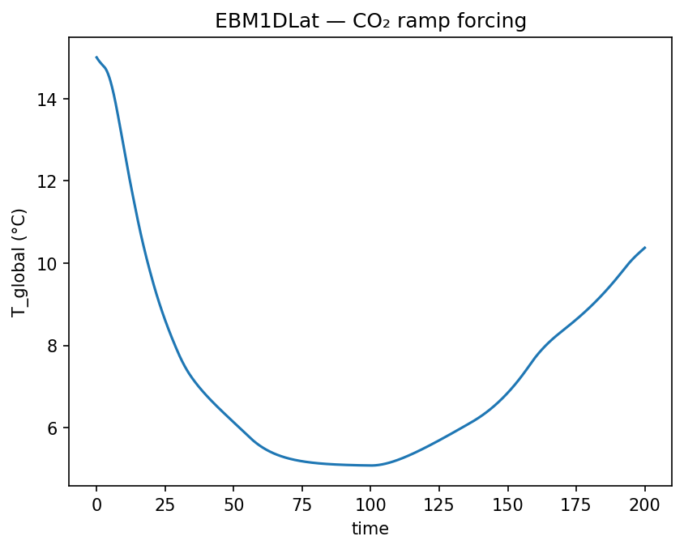

EBM1DLat
EBM1DLat(
var_name='ebm1d_lat',
grid_n=50,
C=10.0,
D=0.55,
A=210.0,
B=2.0,
S0=1365.0,
CO2_forcing=0.0,
state_variables=None,
diagnostic_variables=None,
)Diffusive annual-mean latitudinal energy balance model (Budyko-Sellers type).
Evolves the zonal-mean temperature profile T(phi) on a latitude grid:
C dT/dt = S(x)(1 - alpha(T)) - OLR(T) + D * div(grad T)where x = sin(phi), OLR follows the Budyko linear form (A - CO2_forcing) + B * T, and diffusion is computed in x-coordinates with no-flux polar boundary conditions.
Parameters
var_name : str = 'ebm1d_lat'-
Label for the modeled quantity. Default is
'ebm1d_lat'. grid_n : int = 50-
Number of evenly-spaced latitude grid points from -90° to 90°. Must be ≥ 3. Default is 50.
C : float or callable orcc.Forcing= 10.0-
Heat capacity (W yr m⁻² K⁻¹). Default is 10.0.
D : float or callable orcc.Forcing= 0.55-
Meridional diffusion coefficient. Default is 0.55.
A : float or callable orcc.Forcing= 210.0-
Budyko OLR intercept (W m⁻²). Default is 210.0.
B : float or callable orcc.Forcing= 2.0-
Budyko OLR slope (W m⁻² K⁻¹). Default is 2.0.
S0 : float or callable orcc.Forcing= 1365.0-
Solar constant (W m⁻²). Default is 1365.0.
CO2_forcing : float or callable orcc.Forcing= 0.0-
Radiative forcing from CO2 (W m⁻²); shifts the OLR intercept down, warming the climate. Default is 0.0.
state_variables : list of str = None-
Names of the integrated state variables. Defaults to
['T_0', 'T_1', ..., 'T_{grid_n-1}']. diagnostic_variables : list of str = None-
Names of diagnostic quantities computed from the solved trajectory. Default is
['ice_line_lat', 'Tglobal'].
Notes
State variables are T_0 through T_{grid_n-1} (one temperature per latitude band, ordered from south pole to north pole). Diagnostic variables ice_line_lat and Tglobal are derived after integration.
validate_initial_state accepts a scalar and broadcasts it uniformly to the full grid.
All parameters (C, D, A, B, S0, CO2_forcing) are registered in param_values and can be swapped for callables or Forcing objects. Callables must follow the contract (t), (t, state), or (t, state, model).
See also
EBM0D : Zero-dimensional variant. EBMBase : Shared base class. albedo_func1D : Latitudinally-resolved albedo callable.
Examples
import matplotlib.pyplot as plt
import numpy as np
from climatecritters.model_critters.ebm import EBM1DLat
grid_n = 50
model = EBM1DLat(S0=1365.0, grid_n=grid_n)
output = model.integrate(
t_span=(0, 200), y0=np.full(grid_n, 15.0), method='RK45'
)
# Plot the equilibrium latitude–temperature profile
T_final = [output.state_variables[f'T_{i}'][-1] for i in range(grid_n)]
phi = np.linspace(-90, 90, grid_n)
fig, ax = plt.subplots()
ax.plot(phi, T_final)
ax.set_xlabel('Latitude (°)'); ax.set_ylabel('Temperature (°C)')
plt.savefig('docs/reference/figures/EBM1DLat_example.png',
dpi=150, bbox_inches='tight')
With a CO2 ramp:
import matplotlib.pyplot as plt
import climatecritters as cc
from climatecritters.model_critters.ebm import EBM1DLat
co2_ramp = cc.Forcing.from_sequence([
cc.forcing.Hold(duration=100, value=0.0),
cc.forcing.Ramp(duration=100, y0=0.0, yf=4.0, shape='linear'),
])
model_co2 = EBM1DLat(CO2_forcing=co2_ramp, D=0.35)
output_co2 = model_co2.integrate(t_span=(0, 200), y0=[15.0], method='RK45')
fig, ax = plt.subplots()
ax.plot(output_co2.time, output_co2.diagnostic_variables['Tglobal'])
ax.set_xlabel('time'); ax.set_ylabel('T_global (°C)')
ax.set_title('EBM1DLat — CO₂ ramp forcing')
plt.savefig('docs/reference/figures/EBM1DLat_co2_example.png',
dpi=150, bbox_inches='tight')
Methods
| Name | Description |
|---|---|
| annual_mean_insolation | Compute annual-mean insolation with a P2 latitudinal distribution. |
| calc_OLR | Compute the Budyko linear OLR: (A - CO2_forcing) + B * T. |
| calc_albedo | Compute the latitudinal ice-albedo with a linear transition zone. |
| calc_diffusion | Compute meridional heat diffusion in x = sin(phi) coordinates. |
| calc_global_mean | Compute the cosine-weighted global mean temperature. |
| calc_ice_line_lat | Interpolate the ice-line latitude from the temperature profile. |
| dydt | Evaluate the right-hand side of the PDE at time t and state. |
| populate_diagnostics_from_history | Compute diagnostic variables from the full solved trajectory. |
| validate_initial_state | Validate and normalize the initial temperature profile. |
annual_mean_insolation
EBM1DLat.annual_mean_insolation(t, state)Compute annual-mean insolation with a P2 latitudinal distribution.
Approximates the zonal-mean annual-mean absorbed solar radiation as:
S(x) = (S0 / 4) * s(x), s(x) = 1 - 0.482 * P2(sin phi)where P2 is the second Legendre polynomial and x = sin(phi).
Parameters
Returns
insolation : ndarray of float, shape (grid_n,)-
Annual-mean insolation at each latitude grid point (W m⁻²).
calc_OLR
EBM1DLat.calc_OLR(T, t)Compute the Budyko linear OLR: (A - CO2_forcing) + B * T.
Overrides :meth:EBMBase.calc_OLR. Parameters A, B, and CO2_forcing are resolved through get_param_value, so they can be time-varying or Forcing objects.
Parameters
Returns
olr : ndarray of float, shape (grid_n,)-
Outgoing longwave radiation at each latitude grid point (W m⁻²).
calc_albedo
EBM1DLat.calc_albedo(T, t)Compute the latitudinal ice-albedo with a linear transition zone.
Overrides :meth:EBMBase.calc_albedo. Each grid point is assigned an albedo based on local temperature: 0.6 below -10 °C, 0.3 above 0 °C, and a linear blend in between.
Parameters
Returns
albedo : ndarray of float, shape (grid_n,)-
Albedo at each latitude grid point, in [0.3, 0.6].
calc_diffusion
EBM1DLat.calc_diffusion(temperature, t, state)Compute meridional heat diffusion in x = sin(phi) coordinates.
Applies no-flux boundary conditions at the poles by setting the diffusive flux to zero at the first and last grid points before taking the divergence.
Parameters
Returns
diffusion : ndarray of float, shape (grid_n,)-
Diffusive heat flux convergence at each grid point (W m⁻²), scaled by the transport factor
pi/2.
calc_global_mean
EBM1DLat.calc_global_mean(temperature)Compute the cosine-weighted global mean temperature.
Parameters
temperature : (array -like,shape(grid_n))-
Zonal-mean temperature profile at one timestep.
Returns
Tglobal : float-
Area-weighted global mean temperature in the same units as input.
calc_ice_line_lat
EBM1DLat.calc_ice_line_lat(temperature)Interpolate the ice-line latitude from the temperature profile.
Defines the ice line as the -10 °C isotherm. Computes the ice-line latitude independently in each hemisphere using linear interpolation between the two adjacent grid points that straddle the threshold, then returns the average of the two hemispheric values.
Special cases: returns 90° if a hemisphere is entirely above the threshold (no ice) and 0° if entirely at or below it (full ice cover).
Parameters
temperature : (array -like,shape(grid_n))-
Zonal-mean temperature profile at one timestep.
Returns
ice_line_lat : float-
Mean hemispheric ice-line latitude in degrees from the equator (range [0°, 90°]).
dydt
EBM1DLat.dydt(t, state)Evaluate the right-hand side of the PDE at time t and state.
Computes the net energy flux at each latitude grid point from insolation, ice-albedo feedback, Budyko OLR, and meridional diffusion.
This method has no side effects: because uses_post_history = True, all output is derived from the full solved trajectory in :meth:populate_diagnostics_from_history rather than accumulated here.
Parameters
Returns
dTdt : ndarray of float, shape (grid_n,)-
Time-derivative of the temperature at each latitude grid point.
populate_diagnostics_from_history
EBM1DLat.populate_diagnostics_from_history(time, history)Compute diagnostic variables from the full solved trajectory.
Called automatically by :meth:CCModel.post_integrate after the solver completes. Populates self.diagnostic_variables with the global-mean temperature and ice-line latitude at every timestep.
Parameters
time : (array -like,shape(n_steps))-
Solver time axis.
history : (ndarray,shape(n_steps,grid_n))-
Full temperature trajectory; each row is the temperature profile at one timestep.
validate_initial_state
EBM1DLat.validate_initial_state(y0)Validate and normalize the initial temperature profile.
Overrides :meth:CCModel.validate_initial_state to accept a scalar initial condition and broadcast it uniformly across the latitude grid.
Parameters
Returns
y0_arr : ndarray of float, shape (grid_n,)-
Validated and grid-length initial temperature array.